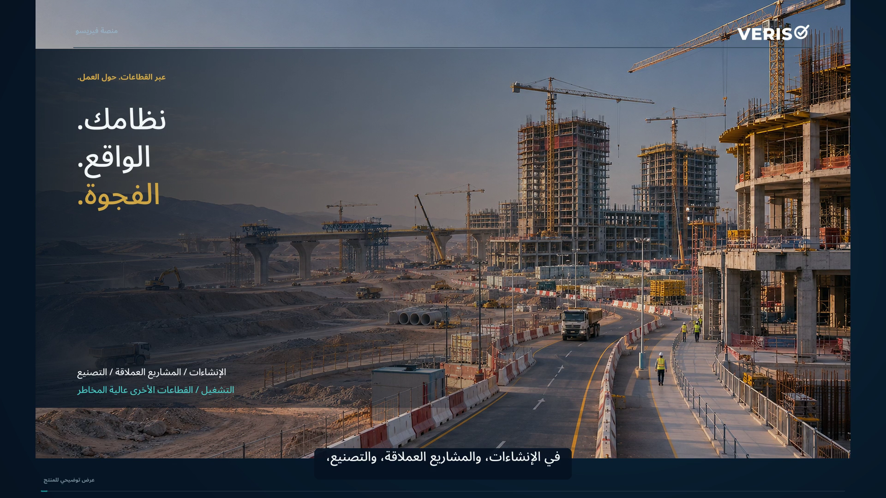
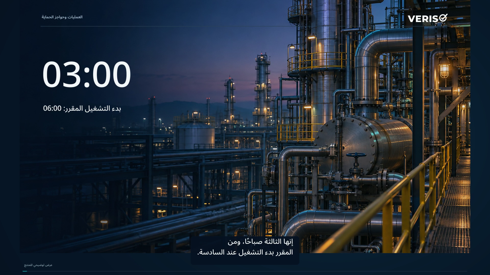
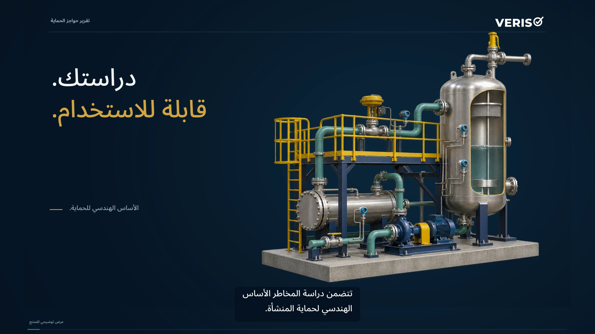

مكتبة الفيديو
Veriso، شرح عملي.
تعرّف على المنصة، والإدارة المستمرة للعمليات وحواجز الحماية، وتقرير الدراسة. يتوفر كل فيلم بالعربية والإنجليزية، مع نص مصاحب في المشغّل ونص كامل للقراءة.

7:32منصة فيريسو
تقرأ منصة فيريسو سياسات مؤسستك وإجراءاتها وسجلاتها التشغيلية، وتقارنها بالمتطلبات المنطبقة والأدلة الميدانية لتحديد الفجوات. وتساعد الفرق على ترتيب أولويات العمل، وإعداد التحسينات والتدريب المخصص لكل دور، وتحديد المسؤوليات، والتحقق من فاعلية التغييرات في الممارسة.
شاهد الفيلم
6:08فيريسو: العمليات وحواجز الحماية
ربط قصد دراسة المخاطر بحالة الحماية التشغيلية والفحوص والتغييرات والقرارات ذات المسؤوليات الواضحة.
شاهد الفيلم
2:23فيريسو: تقرير حواجز الحماية
تحويل دراسة المخاطر إلى تقرير مترابط يوضح الأخطار وحواجز الحماية والمسائل التي تحتاج إلى مراجعة هندسية.
شاهد الفيلم